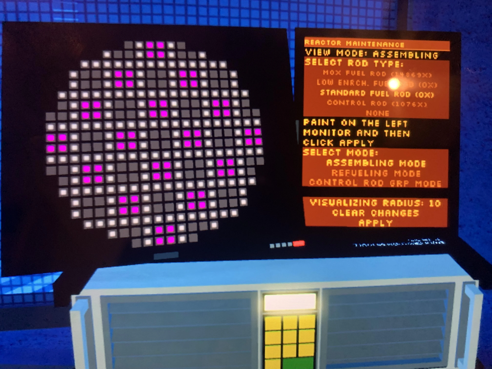

Shutdown Procedure
Instructions for safely shutting down the reactor.
Learn moreTo begin reactor reactor assembly, we must first understand what it is. A nuclear reactor core assembly is the placement and arrangement of fuel rods, control rods, and other components that make up the heart of a nuclear reactor. Our reactor can accept 316 total rods. This process also works for refueling the reactor.
 Begin locating the miscellaneous section of the control panel. There, you can various buttons and switches. If you already haven't, press the "Display Power" button to activate the displays. Then, Activate maintenance mode in order to begin flooding the reactor hall. This is nesscary to prevent any radiation leaks during the assembly process. Turn ON the flood pumps and let the water fill the reactor hall. This should take around 5 minutes. When the water level is sufficient, the reactor lid button will automatically unlock itself alowing you to proceed.
Begin locating the miscellaneous section of the control panel. There, you can various buttons and switches. If you already haven't, press the "Display Power" button to activate the displays. Then, Activate maintenance mode in order to begin flooding the reactor hall. This is nesscary to prevent any radiation leaks during the assembly process. Turn ON the flood pumps and let the water fill the reactor hall. This should take around 5 minutes. When the water level is sufficient, the reactor lid button will automatically unlock itself alowing you to proceed.
 Now, once the reactor lid is unlocked, you can proceed by navigating to the reactor maintenance panel. Here you may observe a grid pattern. Begin by selecting your desired fuel rod from the right-hand side and simply paint it into the grid. Once your pattern is complete, click the assemble button. Soon the crane inside the reactor hall should automatically begin placing the rods into the grid pattern you selected. Always make sure your rods are in an even grid pattern and that there are control rods inside the reactor. Larger cores generate more thermal power and faulty cores may meltdown. Arrowcat industries is not responsible for any damages caused by improper assembly.
Now, once the reactor lid is unlocked, you can proceed by navigating to the reactor maintenance panel. Here you may observe a grid pattern. Begin by selecting your desired fuel rod from the right-hand side and simply paint it into the grid. Once your pattern is complete, click the assemble button. Soon the crane inside the reactor hall should automatically begin placing the rods into the grid pattern you selected. Always make sure your rods are in an even grid pattern and that there are control rods inside the reactor. Larger cores generate more thermal power and faulty cores may meltdown. Arrowcat industries is not responsible for any damages caused by improper assembly.
The assembly process can take up to 1 hour long so be patient. When the assembly is complete, simply turn on the drain valve. Once the water has been drained, close the reactor lid and disable maintenance mode. Your reactor should now be fully assembled.
In order to refuel the reactor, the process is exactly the same except for that the maintenence system will automatically mark which fuel rods are low. Simply click on the low rods and click apply to replace them.
Other important procedures when it comes to reactor operations.
Instructions for safely shutting down the reactor.
Learn more
Common issues, how to identify and resolve them.
Learn more
Procedures for regular maintenance and inspection of the reactor.
Learn more
Procedures for handling emergency situations in the reactor.
Learn more